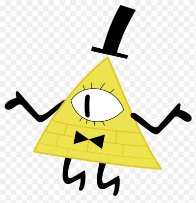

Gravity Falls - Билл Шифр

Билл Шифр - магическое создание, могущественный демон, способный войти в подсознание человека, а также главный антагонист сериала. Билл известен своим таинственным поведением и садистским юмором. Наводил ужас в Гравити Фолз, с тех пор, как был вызван Фордом Пайнсом более тридцати лет назад. Является главным антагонистом Гравити Фолз, несмотря на то, что он не играл важной роли вплоть до эпизода «Пленники разума».
Он, а также символ, на котором он основан (Всевидящее око), часто появляются в Гравити Фолз.